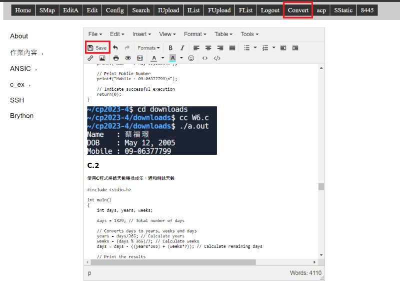

網站維護 <<
Previous Next >> SSH
replit維護
1.點擊上方Run啟動編輯網頁
2.點擊New teb將編輯網頁獨立出來

3.在Password輸入密碼後點擊login登入(密碼預設admin)

網頁功能:
SMap: 網站所有頁面
EditA: 使用時機為(1)解決多人共用網站時的衝突, 或(2)刪除特定頁面
Edit: 先選頁面, 再選 Edit 然後才能進入編輯模式
Config: 編輯網站標題, 若要編輯 site title, 必須更改 init.py 中的 site_title 字串內容
Search: 頁面資料 html 原始碼內容搜尋
IUpload: 影像檔案上傳, 資料會放入 images 目錄中
IList: 列出存在 images 目錄下的影像檔案
FUpload: 一般檔案上傳功能, 資料會放入 downloads 目錄中
FList: 列出位於 downloads 目錄下的檔案
Logout: 登出
Convert: 將 config/content.htm 經過分頁程式處理後, 轉為 content 目錄下的超文件
4.編輯完內容後點擊下方save儲存，在點擊右上方Convert將先前編輯內容轉為靜態

5.到replit在Git頁面中，於Message中輸入此次維護網頁的事項。
6.點擊 Stage and commit all changes 儲存這個commit。
網站維護 <<
Previous Next >> SSH